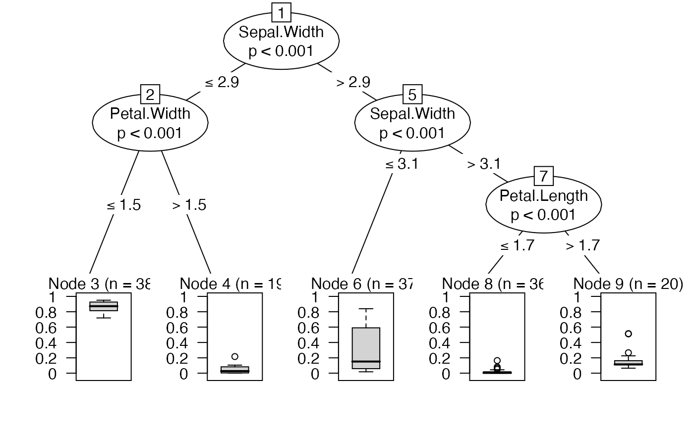

moreparty.RmdTo begin with, let’s create a binary classification problem from the iris data set.
iris2 = iris
iris2$Species = factor(iris$Species=="versicolor")Now we can fit a conditional forest to the data. We use doParallel package for parallelization, here with 2 cores. The syntax of fastcforest function is exactly the same as cforest from party package, with an additional option for parallelization.
set.seed(123)
library(moreparty)
library(doParallel)
registerDoParallel(cores=2)
iris.cf = fastcforest(Species~., data=iris2, parallel=TRUE)
stopImplicitCluster()We may now compute the variable importances.
registerDoParallel(cores=2)
vi = fastvarImp(iris.cf, measure='ACC', parallel=TRUE)
stopImplicitCluster()
rev(sort(vi))## Petal.Width Sepal.Width Petal.Length Sepal.Length
## 0.18280000 0.13865455 0.06905455 0.01447273Petal width and sepal width seem notably more important than the other two variables.
A surrogate tree is a simple tree that tries to approximate a more complex (and less interpretable) model, such as random forests.
surro = SurrogateTree(iris.cf)
surro$r.squared## [1] 0.8106399
plot(surro$tree)
This surrogate tree approximates our forest’s predictions, but in a far from perfect way (R2 = 0.82), so it should probably be interpreted cautiously.
Prototypes are ‘representative’ cases of a group of data points, here versicolor vs non versicolor species, according the proximity matrix derived from the forest.
prox = proximity(iris.cf)
Prototypes(iris2$Species, iris2[,1:4], prox, nProto=3)## $`FALSE`
## Sepal.Length Sepal.Width Petal.Length Petal.Width
## [1,] "6.7" "3.25" "5.7" "2.3"
## [2,] "5.1" "3.5" "1.5" "0.2"
## [3,] "5.1" "3.4" "1.5" "0.3"
##
## $`TRUE`
## Sepal.Length Sepal.Width Petal.Length Petal.Width
## [1,] "5.8" "2.8" "4.25" "1.3"
## [2,] "6.3" "2.95" "4.5" "1.45"
## [3,] "6.2" "2.95" "4.5" "1.4"The prototypes of versicolor species all have sepal length about 5, sepal width about 3, petal length about 4.5 and petal width about 1.4. The prototypes of non versicolor species are more heterogeneous, in particular in terms of petal length and width.